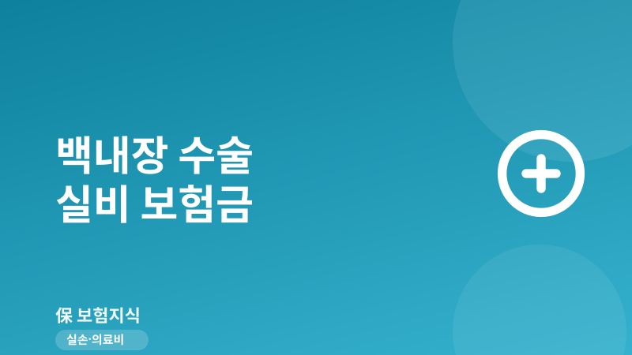
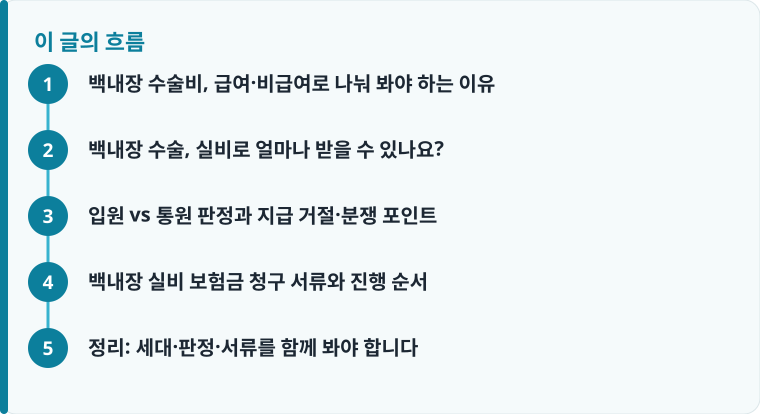

백내장 수술비는 급여(건강보험 적용)와 비급여(다초점렌즈 등)로 나뉘며, 실손에서 채워 주는 범위와 자기부담금이 서로 다릅니다.
다초점렌즈 비용의 실손 보장은 실손 세대(1~4세대)와 입원·통원 판정에 따라 결과가 크게 갈립니다.
‘하루짜리 입원’이 통원으로 재판정되면 한도가 크게 줄어, 지급 거절·삭감 분쟁의 핵심 쟁점이 됩니다.
백내장 수술비, 급여·비급여로 나눠 봐야 하는 이유
백내장 수술은 혼탁해진 수정체를 제거하고 인공수정체(안내렌즈)를 넣는 시술입니다. 청구할 때 헷갈리는 이유는 한 번의 수술 안에 성격이 다른 두 종류의 비용이 섞여 있기 때문입니다. 수술 자체와 단초점렌즈처럼 건강보험이 적용되는 항목은 ‘급여’이고, 노안·난시까지 교정하는 다초점렌즈나 일부 검사·재료는 건강보험이 적용되지 않는 ‘비급여’입니다.
실손보험은 이 급여와 비급여를 다른 칸에서 계산합니다. 급여 의료비는 자기부담금이 보통 10~20% 수준이지만, 비급여는 30% 안팎으로 더 높게 잡히는 구조라 같은 100만 원이라도 어느 칸에 들어가느냐에 따라 돌려받는 금액이 달라집니다. 실손이 급여·비급여를 어떻게 나눠 보장하는지 헷갈린다면 실손보험 급여·비급여 보장 구조 정리를 먼저 확인하면 이 글이 훨씬 쉽게 읽힙니다.
백내장 수술, 실비로 얼마나 받을 수 있나요?
가장 많이 묻는 질문이지만, ‘정액 얼마’로 답할 수 없는 항목입니다. 수술과 급여 부분은 실손 세대와 무관하게 대체로 보장되지만, 논란의 중심은 수백만 원대에 이르는 다초점렌즈(비급여) 비용입니다. 이 부분은 실손 세대에 따라 결과가 크게 갈립니다.
1·2세대 실손은 비급여 렌즈료까지 폭넓게 인정하던 시기가 있었지만, 과잉 진료 논란 이후 2016년 표준약관 개정과 대법원 판단을 거치며 ‘통원’으로 보아 통원 한도(회당 수십만 원 수준) 안에서만 지급하는 방향으로 정리됐습니다. 이후 판매된 3·4세대 실손은 다초점렌즈 재료비를 아예 보장 대상에서 제외하거나 별도 특약으로 분리해, 렌즈값 대부분을 본인이 부담하게 되는 경우가 많습니다. 이런 개정 배경은 실손보험 표준약관 개정 내용과 세대별 차이 해설에서 조금 더 자세히 확인할 수 있습니다.

입원 vs 통원 판정과 지급 거절·분쟁 포인트
백내장 실비 분쟁의 90%는 ‘이 수술이 입원이냐 통원이냐’에서 시작됩니다. 실손에서 입원 한도는 연 5,000만 원 안팎으로 크지만, 통원 한도는 회당 20만~30만 원 수준으로 훨씬 작습니다. 그래서 병원이 하루 입원으로 처리하면 다초점렌즈 비용까지 입원 한도로 인정받을 여지가 생기고, 통원으로 재판정되면 렌즈값 대부분이 한도를 넘겨 삭감됩니다.
보험사는 6시간 이상 관찰·처치가 실제로 있었는지, 입원이 의학적으로 꼭 필요했는지를 따져 ‘외형만 입원’인 경우를 통원으로 재분류합니다. 실제로 백내장은 손해보험협회·금융감독원이 통원 성격으로 보는 대표 사례로 꼽혀, 하루 입원 청구가 삭감되는 일이 잦습니다. 어떤 사유로 백내장 청구가 거절·삭감되는지는 보험금 지급 거절 사례와 대응 방법과 실손 청구가 거절된 실제 사례 모음을 함께 보면 내 상황과 대조해 볼 수 있습니다.
작성·검수 기준
이 글은 특정 안과나 보험상품을 권유하기 위한 것이 아니라, 백내장 수술 실비 청구에서 자주 혼동되는 급여·비급여 구분과 다초점렌즈 보장, 입원·통원 판정 기준을 일반적인 약관 상식 범위에서 정리한 것입니다. 자기부담 비율, 세대별 보장 범위, 통원 한도 금액은 가입 시점의 약관과 개별 계약에 따라 달라질 수 있습니다.
정확한 보장 범위는 본인 증권의 약관과 상품설명서, 그리고 실손보험 청구 방법과 필요서류 안내를 함께 확인하는 것이 가장 정확합니다.
백내장 실비 보험금 청구 서류와 진행 순서
백내장은 다른 실손 청구보다 서류를 꼼꼼히 챙겨야 삭감을 줄일 수 있습니다. 특히 ‘왜 수술이 필요했는지’를 보여 주는 검사 기록과 렌즈 종류가 명시된 영수증이 핵심입니다. 아래 순서대로 준비하면 누락을 줄일 수 있습니다.
- 진단서 또는 소견서에 백내장 진단명과 수술 필요성, 수술일을 확인합니다.
- 진료비 영수증과 세부 산정내역서를 받아 급여·비급여 항목을 구분합니다.
- 다초점렌즈를 넣었다면 렌즈 종류·재료비가 명시된 서류를 별도로 챙깁니다.
- 입원으로 청구한다면 입·퇴원 확인서와 관찰·처치 기록으로 입원 필요성을 뒷받침합니다.
- 백내장을 유발한 검사 결과(세극등·안압 등)를 함께 제출해 수술의 타당성을 보강합니다.
정리: 세대·판정·서류를 함께 봐야 합니다
백내장 수술 실비는 ‘얼마 나오냐’를 한마디로 답하기 어렵습니다. 급여 부분은 대체로 보장되지만, 다초점렌즈 같은 비급여는 실손 세대와 입원·통원 판정에 따라 전액에 가깝게 받을 수도, 통원 한도만큼만 받을 수도 있습니다. 내 실손이 몇 세대인지, 병원이 어떤 방식으로 청구하는지, 서류가 수술 필요성을 충분히 보여 주는지를 함께 점검하면 기대와 실제 지급액의 차이를 줄일 수 있습니다.
다른 보험 정보 글이 궁금하다면 보험지식 블로그에서 이어 읽어 보세요. 가입 전에는 반드시 약관과 상품설명서를 확인하는 것이 가장 안전한 방법입니다.